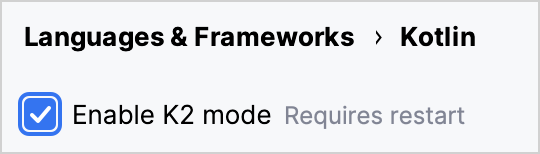
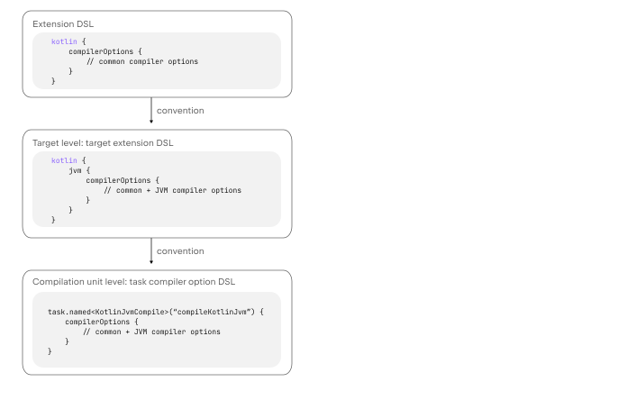

Kotlin 2.0.0 的新特性
The Kotlin 2.0.0 release is out and the new Kotlin K2 compiler is Stable! Additionally, here are some other highlights:
- New Compose compiler Gradle plugin
- Generation of lambda functions using invokedynamic
- The kotlinx-metadata-jvm library is now Stable
- Monitoring GC performance in Kotlin/Native with signposts on Apple platforms
- Resolving conflicts in Kotlin/Native with Objective-C methods
- Support for named export in Kotlin/Wasm
- Support for unsigned primitive types in functions with @JsExport in Kotlin/Wasm
- Optimize production builds by default using Binaryen
- New Gradle DSL for compiler options in multiplatform projects
- Stable replacement of the enum class values generic function
- Stable AutoCloseable interface
Kotlin 2.0 is a huge milestone for the JetBrains team. This release was the center of KotlinConf 2024. Check out the opening keynote, where we announced exciting updates and addressed the recent work on the Kotlin language:
YouTube 视频：KotlinConf'24 - Keynote
IDE support
The Kotlin plugins that support Kotlin 2.0.0 are bundled in the latest IntelliJ IDEA and Android Studio. You don't need to update the Kotlin plugin in your IDE. All you need to do is to change the Kotlin version to Kotlin 2.0.0 in your build scripts.
- For details about IntelliJ IDEA's support for the Kotlin K2 compiler, see Support in IDEs.
- For more details about IntelliJ IDEA's support for Kotlin, see Kotlin releases.
Kotlin K2 compiler
The road to the K2 compiler has been a long one, but now the JetBrains team is finally ready to announce its stabilization. In Kotlin 2.0.0, the new Kotlin K2 compiler is used by default and it is Stable for all target platforms: JVM, Native, Wasm, and JS. The new compiler brings major performance improvements, speeds up new language feature development, unifies all platforms that Kotlin supports, and provides a better architecture for multiplatform projects.
The JetBrains team has ensured the quality of the new compiler by successfully compiling 10 million lines of code from selected user and internal projects. 18,000 developers were involved in the stabilization process, testing the new K2 compiler across a total of 80,000 projects and reporting any problems they found.
To help make the migration process to the new compiler as smooth as possible, we've created a K2 compiler migration guide. This guide explains the many benefits of the compiler, highlights any changes you might encounter, and describes how to roll back to the previous version if necessary.
In a blog post, we explored the performance of the K2 compiler in different projects. Check it out if you'd like to see real data on how the K2 compiler performs and find instructions on how to collect performance benchmarks from your own projects.
You can also watch this talk from KotlinConf 2024, where Michail Zarečenskij, the lead language designer, discusses the feature evolution in Kotlin and the K2 compiler:
YouTube 视频：Kotlin Language Features in 2.0 and Beyond
Current K2 compiler limitations
Enabling K2 in your Gradle project comes with certain limitations that can affect projects using Gradle versions below 8.3 in the following cases:
- Compilation of source code from
buildSrc. - Compilation of Gradle plugins in included builds.
- Compilation of other Gradle plugins if they are used in projects with Gradle versions below 8.3.
- Building Gradle plugin dependencies.
If you encounter any of the problems mentioned above, you can take the following steps to address them:
Set the language version for
buildSrc, any Gradle plugins, and their dependencies:kotlin { compilerOptions { languageVersion.set(org.jetbrains.kotlin.gradle.dsl.KotlinVersion.KOTLIN_1_9) apiVersion.set(org.jetbrains.kotlin.gradle.dsl.KotlinVersion.KOTLIN_1_9) } }If you configure language and API versions for specific tasks, these values will override the values set by the
compilerOptionsextension. In this case, language and API versions should not be higher than 1.9.Update the Gradle version in your project to 8.3 or later.
Smart cast improvements
The Kotlin compiler can automatically cast an object to a type in specific cases, saving you the trouble of having to explicitly cast it yourself. This is called smart casting. The Kotlin K2 compiler now performs smart casts in even more scenarios than before.
In Kotlin 2.0.0, we've made improvements related to smart casts in the following areas:
- Local variables and further scopes
- Type checks with logical
oroperator - Inline functions
- Properties with function types
- Exception handling
- Increment and decrement operators
Local variables and further scopes
Previously, if a variable was evaluated as not null within an if condition, the variable would be smart-cast.
Information about this variable would then be shared further within the scope of the if block.
However, if you declared the variable outside the if condition, no information about the variable would be available
within the if condition, so it couldn't be smart-cast. This behavior was also seen with when expressions and while loops.
From Kotlin 2.0.0, if you declare a variable before using it in your if, when, or while condition, then any
information collected by the compiler about the variable will be accessible in the corresponding block for
smart-casting.
This can be useful when you want to do things like extract boolean conditions into variables. Then, you can give the variable a meaningful name, which will improve your code readability and make it possible to reuse the variable later in your code. For example:
class Cat {
fun purr() {
println("Purr purr")
}
}
fun petAnimal(animal: Any) {
val isCat = animal is Cat
if (isCat) {
// In Kotlin 2.0.0, the compiler can access
// information about isCat, so it knows that
// animal was smart-cast to the type Cat.
// Therefore, the purr() function can be called.
// In Kotlin 1.9.20, the compiler doesn't know
// about the smart cast, so calling the purr()
// function triggers an error.
animal.purr()
}
}
fun main() {
val kitty = Cat()
petAnimal(kitty)
// Purr purr
}
Type checks with logical or operator
In Kotlin 2.0.0, if you combine type checks for objects with an or operator (||), a smart cast
is made to their closest common supertype. Before this change, a smart cast was always made to the Any type.
In this case, you still had to manually check the object type afterward before you could access any of its properties or call its functions. For example:
interface Status {
fun signal() {}
}
interface Ok : Status
interface Postponed : Status
interface Declined : Status
fun signalCheck(signalStatus: Any) {
if (signalStatus is Postponed || signalStatus is Declined) {
// signalStatus is smart-cast to a common supertype Status
signalStatus.signal()
// Prior to Kotlin 2.0.0, signalStatus is smart cast
// to type Any, so calling the signal() function triggered an
// Unresolved reference error. The signal() function can only
// be called successfully after another type check:
// check(signalStatus is Status)
// signalStatus.signal()
}
}
The common supertype is an approximation of a union type. Union types are not supported in Kotlin.
Inline functions
In Kotlin 2.0.0, the K2 compiler treats inline functions differently, allowing it to determine in combination with other compiler analyses whether it's safe to smart-cast.
Specifically, inline functions are now treated as having an implicit callsInPlace
contract. This means that any lambda functions passed to an inline function are called in place. Since lambda functions
are called in place, the compiler knows that a lambda function can't leak references to any variables contained within
its function body.
The compiler uses this knowledge along with other compiler analyses to decide whether it's safe to smart-cast any of the captured variables. For example:
interface Processor {
fun process()
}
inline fun inlineAction(f: () -> Unit) = f()
fun nextProcessor(): Processor? = null
fun runProcessor(): Processor? {
var processor: Processor? = null
inlineAction {
// In Kotlin 2.0.0, the compiler knows that processor
// is a local variable, and inlineAction() is an inline function, so
// references to processor can't be leaked. Therefore, it's safe
// to smart-cast processor.
// If processor isn't null, processor is smart-cast
if (processor != null) {
// The compiler knows that processor isn't null, so no safe call
// is needed
processor.process()
// In Kotlin 1.9.20, you have to perform a safe call:
// processor?.process()
}
processor = nextProcessor()
}
return processor
}
Properties with function types
In previous versions of Kotlin, there was a bug that meant that class properties with a function type weren't smart-cast. We fixed this behavior in Kotlin 2.0.0 and the K2 compiler. For example:
class Holder(val provider: (() -> Unit)?) {
fun process() {
// In Kotlin 2.0.0, if provider isn't null, then
// provider is smart-cast
if (provider != null) {
// The compiler knows that provider isn't null
provider()
// In 1.9.20, the compiler doesn't know that provider isn't
// null, so it triggers an error:
// Reference has a nullable type '(() -> Unit)?', use explicit '?.invoke()' to make a function-like call instead
}
}
}
This change also applies if you overload your invoke operator. For example:
interface Provider {
operator fun invoke()
}
interface Processor : () -> String
class Holder(val provider: Provider?, val processor: Processor?) {
fun process() {
if (provider != null) {
provider()
// In 1.9.20, the compiler triggers an error:
// Reference has a nullable type 'Provider?' use explicit '?.invoke()' to make a function-like call instead
}
}
}
Exception handling
In Kotlin 2.0.0, we've made improvements to exception handling so that smart cast information can be passed on to catch
and finally blocks. This change makes your code safer as the compiler keeps track of whether your object has a nullable
type. For example:
//sampleStart
fun testString() {
var stringInput: String? = null
// stringInput is smart-cast to String type
stringInput = ""
try {
// The compiler knows that stringInput isn't null
println(stringInput.length)
// 0
// The compiler rejects previous smart cast information for
// stringInput. Now stringInput has the String? type.
stringInput = null
// Trigger an exception
if (2 > 1) throw Exception()
stringInput = ""
} catch (exception: Exception) {
// In Kotlin 2.0.0, the compiler knows stringInput
// can be null, so stringInput stays nullable.
println(stringInput?.length)
// null
// In Kotlin 1.9.20, the compiler says that a safe call isn't
// needed, but this is incorrect.
}
}
//sampleEnd
fun main() {
testString()
}
Increment and decrement operators
Prior to Kotlin 2.0.0, the compiler didn't understand that the type of an object can change after using an increment or decrement operator. As the compiler couldn't accurately track the object type, your code could lead to unresolved reference errors. In Kotlin 2.0.0, this has been fixed:
interface Rho {
operator fun inc(): Sigma = TODO()
}
interface Sigma : Rho {
fun sigma() = Unit
}
interface Tau {
fun tau() = Unit
}
fun main(input: Rho) {
var unknownObject: Rho = input
// Check if unknownObject inherits from the Tau interface
// Note, it's possible that unknownObject inherits from both
// Rho and Tau interfaces.
if (unknownObject is Tau) {
// Use the overloaded inc() operator from interface Rho.
// In Kotlin 2.0.0, the type of unknownObject is smart-cast to
// Sigma.
++unknownObject
// In Kotlin 2.0.0, the compiler knows unknownObject has type
// Sigma, so the sigma() function can be called successfully.
unknownObject.sigma()
// In Kotlin 1.9.20, the compiler doesn't perform a smart cast
// when inc() is called so the compiler still thinks that
// unknownObject has type Tau. Calling the sigma() function
// throws a compile-time error.
// In Kotlin 2.0.0, the compiler knows unknownObject has type
// Sigma, so calling the tau() function throws a compile-time
// error.
unknownObject.tau()
// Unresolved reference 'tau'
// In Kotlin 1.9.20, since the compiler mistakenly thinks that
// unknownObject has type Tau, the tau() function can be called,
// but it throws a ClassCastException.
}
}
Kotlin Multiplatform improvements
In Kotlin 2.0.0, we've made improvements in the K2 compiler related to Kotlin Multiplatform in the following areas:
- Separation of common and platform sources during compilation
- Different visibility levels of expected and actual declarations
Separation of common and platform sources during compilation
Previously, the design of the Kotlin compiler prevented it from keeping common and platform source sets separate at compile time. As a consequence, common code could access platform code, which resulted in different behavior between platforms. In addition, some compiler settings and dependencies from common code used to leak into platform code.
In Kotlin 2.0.0, our implementation of the new Kotlin K2 compiler included a redesign of the compilation scheme to ensure strict separation between common and platform source sets. This change is most noticeable when you use expected and actual functions. Previously, it was possible for a function call in your common code to resolve to a function in platform code. For example:
| Common code | Platform code |
| ```kotlin fun foo(x: Any) = println("common foo") fun exampleFunction() { foo(42) } ``` | ```kotlin // JVM fun foo(x: Int) = println("platform foo") // JavaScript // There is no foo() function overload // on the JavaScript platform ``` |
In this example, the common code has different behavior depending on which platform it is run on:
- On the JVM platform, calling the
foo()function in the common code results in thefoo()function from the platform code being called asplatform foo. - On the JavaScript platform, calling the
foo()function in the common code results in thefoo()function from the common code being called ascommon foo, as there is no such function available in the platform code.
In Kotlin 2.0.0, common code doesn't have access to platform code, so both platforms successfully resolve the foo()
function to the foo() function in the common code: common foo.
In addition to the improved consistency of behavior across platforms, we also worked hard to fix cases where there was conflicting behavior between IntelliJ IDEA or Android Studio and the compiler. For instance, when you used expected and actual classes, the following would happen:
| Common code | Platform code |
| ```kotlin expect class Identity { fun confirmIdentity(): String } fun common() { // Before 2.0.0, // it triggers an IDE-only error Identity().confirmIdentity() // RESOLUTION_TO_CLASSIFIER : Expected class // Identity has no default constructor. } ``` | ```kotlin actual class Identity { actual fun confirmIdentity() = "expect class fun: jvm" } ``` |
In this example, the expected class Identity has no default constructor, so it can't be called successfully in common code.
Previously, an error was only reported by the IDE, but the code still compiled successfully on the JVM. However, now the
compiler correctly reports an error:
Expected class 'expect class Identity : Any' does not have default constructor
When resolution behavior doesn't change
We're still in the process of migrating to the new compilation scheme, so the resolution behavior is still the same when you call functions that aren't within the same source set. You'll notice this difference mainly when you use overloads from a multiplatform library in your common code.
Suppose you have a library, which has two whichFun() functions with different signatures:
// Example library
// MODULE: common
fun whichFun(x: Any) = println("common function")
// MODULE: JVM
fun whichFun(x: Int) = println("platform function")
If you call the whichFun() function in your common code, the function that has the most relevant argument type in the
library is resolved:
// A project that uses the example library for the JVM target
// MODULE: common
fun main() {
whichFun(2)
// platform function
}
In comparison, if you declare the overloads for whichFun() within the same source set, the function from the common
code will be resolved because your code doesn't have access to the platform-specific version:
// Example library isn't used
// MODULE: common
fun whichFun(x: Any) = println("common function")
fun main() {
whichFun(2)
// common function
}
// MODULE: JVM
fun whichFun(x: Int) = println("platform function")
Similar to multiplatform libraries, since the commonTest module is in a separate source set, it also still has access
to platform-specific code. Therefore, the resolution of calls to functions in the commonTest module exhibits the same
behavior as in the old compilation scheme.
In the future, these remaining cases will be more consistent with the new compilation scheme.
Different visibility levels of expected and actual declarations
Before Kotlin 2.0.0, if you used expected and actual declarations in your Kotlin Multiplatform project, they had to have the same visibility level. Kotlin 2.0.0 now also supports different visibility levels but only if the actual declaration is more permissive than the expected declaration. For example:
expect internal class Attribute // Visibility is internal
actual class Attribute // Visibility is public by default,
// which is more permissive
Similarly, if you are using a type alias in your actual declaration, the visibility of the underlying type should be the same or more permissive than the expected declaration. For example:
expect internal class Attribute // Visibility is internal
internal actual typealias Attribute = Expanded
class Expanded // Visibility is public by default,
// which is more permissive
Compiler plugins support
Currently, the Kotlin K2 compiler supports the following Kotlin compiler plugins:
all-open- AtomicFU
jvm-abi-genjs-plain-objects- kapt
- Lombok
no-arg- Parcelize
- SAM with receiver
- serialization
- Power-assert
In addition, the Kotlin K2 compiler supports:
- The Jetpack Compose compiler plugin 2.0.0, which was moved into the Kotlin repository.
- The Kotlin Symbol Processing (KSP) plugin since KSP2.
If you use any additional compiler plugins, check their documentation to see if they are compatible with K2.
Experimental Kotlin Power-assert compiler plugin
The Kotlin Power-assert plugin is Experimental. It may be changed at any time.
Kotlin 2.0.0 introduces an experimental Power-assert compiler plugin. This plugin improves the experience of writing tests by including contextual information in failure messages, making debugging easier and more efficient.
Developers often need to use complex assertion libraries to write effective tests. The Power-assert plugin simplifies this process by automatically generating failure messages that include intermediate values of the assertion expression. This helps developers quickly understand why a test failed.
When an assertion fails in a test, the improved error message shows the values of all variables and sub-expressions within the assertion, making it clear which part of the condition caused the failure. This is particularly useful for complex assertions where multiple conditions are checked.
To enable the plugin in your project, configure it in your build.gradle(.kts) file:
【Kotlin】
plugins {
kotlin("multiplatform") version "2.0.0"
kotlin("plugin.power-assert") version "2.0.0"
}
powerAssert {
functions = listOf("kotlin.assert", "kotlin.test.assertTrue")
}
【Groovy】
plugins {
id 'org.jetbrains.kotlin.multiplatform' version '2.0.0'
id 'org.jetbrains.kotlin.plugin.power-assert' version '2.0.0'
}
powerAssert {
functions = ["kotlin.assert", "kotlin.test.assertTrue"]
}
Learn more about the Kotlin Power-assert plugin in the documentation.
How to enable the Kotlin K2 compiler
Starting with Kotlin 2.0.0, the Kotlin K2 compiler is enabled by default. No additional actions are required.
Try the Kotlin K2 compiler in Kotlin Playground
Kotlin Playground supports the 2.0.0 release. Check it out!
Support in IDEs
By default, IntelliJ IDEA and Android Studio still use the previous compiler for code analysis, code completion, highlighting, and other IDE-related features. To get the full Kotlin 2.0 experience in your IDE, enable K2 mode.
In your IDE, go to Settings | Languages & Frameworks | Kotlin and select the Enable K2 mode option. The IDE will analyze your code using its K2 mode.

After enabling K2 mode, you may notice differences in IDE analysis due to changes in compiler behavior. Learn how the new K2 compiler differs from the previous one in our migration guide.
- Learn more about K2 mode in our blog.
- We are actively collecting feedback about K2 mode, so please share your thoughts in our public Slack channel.
Leave your feedback on the new K2 compiler
We would appreciate any feedback you may have!
- Report any problems you face with the new K2 compiler in our issue tracker.
- Enable the "Send usage statistics" option to allow JetBrains to collect anonymous data about K2 usage.
Kotlin/JVM
Starting with version 2.0.0, the compiler can generate classes containing Java 22 bytecode. This version also brings the following changes:
Generation of lambda functions using invokedynamic
Kotlin 2.0.0 introduces a new default method for generating lambda functions using invokedynamic. This change reduces
the binary sizes of applications compared to the traditional anonymous class generation.
Since the first version, Kotlin has generated lambdas as anonymous classes. However, starting from Kotlin 1.5.0,
the option for invokedynamic generation has been available by using the -Xlambdas=indy compiler option. In Kotlin
2.0.0, invokedynamic has become the default method for lambda generation. This method produces lighter binaries and
aligns Kotlin with JVM optimizations, ensuring applications benefit from ongoing and future improvements in JVM performance.
Currently, it has three limitations compared to ordinary lambda compilation:
- A lambda compiled into
invokedynamicis not serializable. - Experimental
reflect()API does not support lambdas generated byinvokedynamic. - Calling
.toString()on such a lambda produces a less readable string representation:
fun main() {
println({})
// With Kotlin 1.9.24 and reflection, returns
// () -> kotlin.Unit
// With Kotlin 2.0.0, returns
// FileKt$$Lambda$13/0x00007f88a0004608@506e1b77
}
To retain the legacy behavior of generating lambda functions, you can either:
- Annotate specific lambdas with
@JvmSerializableLambda. - Use the compiler option
-Xlambdas=classto generate all lambdas in a module using the legacy method.
The kotlinx-metadata-jvm library is Stable
In Kotlin 2.0.0, the kotlinx-metadata-jvm library became Stable. Now that the library has changed to the
kotlin package and coordinates, you can find it as kotlin-metadata-jvm (without the "x").
Previously, the kotlinx-metadata-jvm library had its own publishing scheme and version. Now, we will build and publish
the kotlin-metadata-jvm updates as part of the Kotlin release cycle, with the same backward compatibility guarantees
as the Kotlin standard library.
The kotlin-metadata-jvm library provides an API to read and modify metadata of binary files generated by the
Kotlin/JVM compiler.
Kotlin/Native
This version brings the following changes:
- Monitoring GC performance with signposts
- Resolving conflicts with Objective-C methods
- Changed log level for compiler arguments in Kotlin/Native
- Explicitly added standard library and platform dependencies to Kotlin/Native
- Tasks error in Gradle configuration cache
Monitoring GC performance with signposts on Apple platforms
Previously, it was only possible to monitor the performance of Kotlin/Native's garbage collector (GC) by looking into logs. However, these logs were not integrated with Xcode Instruments, a popular toolkit for investigating issues with iOS apps' performance.
Since Kotlin 2.0.0, GC reports pauses with signposts that are available in Instruments. Signposts allow for custom logging within your app, so now, when debugging iOS app performance, you can check if a GC pause corresponds to the application freeze.
Learn more about GC performance analysis in the documentation.
Resolving conflicts with Objective-C methods
Objective-C methods can have different names, but the same number and types of parameters. For example,
locationManager:didEnterRegion:
and locationManager:didExitRegion:.
In Kotlin, these methods have the same signature, so an attempt to use them triggers a conflicting overloads error.
Previously, you had to manually suppress conflicting overloads to avoid this compilation error. To improve Kotlin
interoperability with Objective-C, the Kotlin 2.0.0 introduces the new @ObjCSignatureOverride annotation.
The annotation instructs the Kotlin compiler to ignore conflicting overloads, in case several functions with the same argument types but different argument names are inherited from the Objective-C class.
Applying this annotation is also safer than general error suppression. This annotation can only be used in the case of overriding Objective-C methods, which are supported and tested, while general suppression may hide important errors and lead to silently broken code.
Changed log level for compiler arguments
In this release, the log level for compiler arguments in Kotlin/Native Gradle tasks, such as compile, link, and
cinterop, has changed from info to debug.
With debug as its default value, the log level is consistent with other Gradle compilation tasks and provides detailed
debugging information, including all compiler arguments.
Explicitly added standard library and platform dependencies to Kotlin/Native
Previously, the Kotlin/Native compiler resolved standard library and platform dependencies implicitly, which caused inconsistencies in the way the Kotlin Gradle plugin worked across Kotlin targets.
Now, each Kotlin/Native Gradle compilation explicitly includes standard library and platform dependencies in its
compile-time library path via the compileDependencyFiles compilation parameter.
Tasks error in Gradle configuration cache
Since Kotlin 2.0.0, you may encounter a configuration cache error with messages indicating:
invocation of Task.project at execution time is unsupported.
This error appears in tasks such as NativeDistributionCommonizerTask and KotlinNativeCompile.
However, this is a false-positive error. The underlying issue is the presence of tasks that are not compatible with the
Gradle configuration cache, like the publish* task.
This discrepancy may not be immediately apparent, as the error message suggests a different root cause.
As the precise cause isn't explicitly stated in the error report, the Gradle team is already addressing the issue to fix reports.
Kotlin/Wasm
Kotlin 2.0.0 improves performance and interoperability with JavaScript:
- Optimized production builds by default using Binaryen
- Support for named export
- Support for unsigned primitive types in functions with
@JsExport - Generation of TypeScript declaration files in Kotlin/Wasm
- Support for catching JavaScript exceptions
- New exception handling proposal is now supported as an option
- The
withWasm()function is split into JS and WASI variants
Optimized production builds by default using Binaryen
The Kotlin/Wasm toolchain now applies the Binaryen tool during production compilation to all projects, as opposed to the previous manual setup approach. By our estimations, it should improve runtime performance and reduce the binary size for your project.
This change only affects production compilation. The development compilation process stays the same.
Support for named export
Previously, all exported declarations from Kotlin/Wasm were imported into JavaScript using default export:
//JavaScript:
import Module from "./index.mjs"
Module.add()
Now, you can import each Kotlin declaration marked with @JsExport by name:
// Kotlin:
@JsExport
fun add(a: Int, b: Int) = a + b
//JavaScript:
import { add } from "./index.mjs"
Named exports make it easier to share code between Kotlin and JavaScript modules. They improve readability and help you manage dependencies between modules.
Support for unsigned primitive types in functions with @JsExport
Starting from Kotlin 2.0.0, you can use unsigned primitive types inside external
declarations and functions with the @JsExport annotation that makes Kotlin/Wasm functions available in JavaScript code.
This helps to mitigate the previous limitation that prevented the unsigned primitives from being used directly inside exported and external declarations. Now you can export functions with unsigned primitives as a return or parameter type and consume external declarations that return or consume unsigned primitives.
For more information on Kotlin/Wasm interoperability with JavaScript, see the documentation.
Generation of TypeScript declaration files in Kotlin/Wasm
Generating TypeScript declaration files in Kotlin/Wasm is Experimental. It may be dropped or changed at any time.
In Kotlin 2.0.0, the Kotlin/Wasm compiler is now capable of generating TypeScript definitions from any @JsExport
declarations in your Kotlin code. These definitions can be used by IDEs and JavaScript tools to provide code
autocompletion, help with type checks, and make it easier to include Kotlin code in JavaScript.
The Kotlin/Wasm compiler collects any top-level functions
marked with @JsExport and automatically generates TypeScript definitions in a .d.ts file.
To generate TypeScript definitions, in your build.gradle(.kts) file in the wasmJs {} block, add
the generateTypeScriptDefinitions() function:
kotlin {
wasmJs {
binaries.executable()
browser {
}
generateTypeScriptDefinitions()
}
}
Support for catching JavaScript exceptions
Previously, Kotlin/Wasm code could not catch JavaScript exceptions, making it difficult to handle errors originating from the JavaScript side of the program.
In Kotlin 2.0.0, we have implemented support for catching JavaScript exceptions within Kotlin/Wasm. This implementation
allows you to use try-catch blocks, with specific types like Throwable or JsException, to handle these errors properly.
Additionally, finally blocks, which help execute code regardless of exceptions, also work correctly. While we're
introducing support for catching JavaScript exceptions, no additional information is provided when a JavaScript exception,
like a call stack, occurs. However, we are working on these implementations.
New exception handling proposal is now supported as an option
In this release, we introduce support for the new version of WebAssembly's exception handling proposal within Kotlin/Wasm.
This update ensures the new proposal aligns with Kotlin requirements, enabling the use of Kotlin/Wasm on virtual machines that only support the latest version of the proposal.
Activate the new exception handling proposal by using the -Xwasm-use-new-exception-proposal compiler option, which is
turned off by default.
The withWasm() function is split into JS and WASI variants
The withWasm() function, which used to provide Wasm targets for hierarchy templates, is deprecated in favor of
specialized withWasmJs() and withWasmWasi() functions.
Now you can separate the WASI and JS targets between different groups in the tree definition.
Kotlin/JS
Among other changes, this version brings modern JS compilation to Kotlin, supporting more features from the ES2015 standard:
- New compilation target
- Suspend functions as ES2015 generators
- Passing arguments to the main function
- Per-file compilation for Kotlin/JS projects
- Improved collection interoperability
- Support for createInstance()
- Support for type-safe plain JavaScript objects
- Support for npm package manager
- Changes to compilation tasks
- Discontinuing legacy Kotlin/JS JAR artifacts
New compilation target
In Kotlin 2.0.0, we're adding a new compilation target to Kotlin/JS, es2015. This is a new way for you to enable all
the ES2015 features supported in Kotlin at once.
You can set it up in your build.gradle(.kts) file like this:
kotlin {
js {
compilerOptions {
target.set("es2015")
}
}
}
The new target automatically turns on ES classes and modules and the newly supported ES generators.
Suspend functions as ES2015 generators
This release introduces Experimental support for ES2015 generators for compiling suspend functions.
Using generators instead of state machines should improve the final bundle size of your project. For example, the JetBrains team managed to decrease the bundle size of its Space project by 20% by using the ES2015 generators.
Learn more about ES2015 (ECMAScript 2015, ES6) in the official documentation.
Passing arguments to the main function
Starting with Kotlin 2.0.0, you can specify a source of your args for the main() function. This feature makes it
easier to work with the command line and pass the arguments.
To do this, define the js {} block with the new passAsArgumentToMainFunction() function, which returns an array of
strings:
kotlin {
js {
binary.executable()
passAsArgumentToMainFunction("Deno.args")
}
}
The function is executed at runtime. It takes the JavaScript expression and uses it as the args: Array<String>
argument instead of the main() function call.
Also, if you use the Node.js runtime, you can take advantage of a special alias. It allows you to pass process.argv to
the args parameter once instead of adding it manually every time:
kotlin {
js {
binary.executable()
nodejs {
passProcessArgvToMainFunction()
}
}
}
Per-file compilation for Kotlin/JS projects
Kotlin 2.0.0 introduces a new granularity option for the Kotlin/JS project output. You can now set up a per-file compilation that generates one JavaScript file for each Kotlin file. It helps to significantly optimize the size of the final bundle and improve the loading time of the program.
Previously, there were only two output options. The Kotlin/JS compiler could generate a single .js file for the whole
project. However, this file might be too large and inconvenient to use. Whenever you wanted to use a function from your
project, you had to include the entire JavaScript file as a dependency. Alternatively, you could configure a compilation
of a separate .js file for each project module. This is still the default option.
Since module files could also be too large, with Kotlin 2.0.0, we add a more granular output that generates one (or two, if the file contains exported declarations) JavaScript file per each Kotlin file. To enable the per-file compilation mode:
Add the
useEsModules()function to your build file to support ECMAScript modules:// build.gradle.kts kotlin { js(IR) { useEsModules() // Enables ES2015 modules browser() } }You can also use the new
es2015compilation target for that.Apply the
-Xir-per-filecompiler option or update yourgradle.propertiesfile with:# gradle.properties kotlin.js.ir.output.granularity=per-file // `per-module` is the default
Improved collection interoperability
Starting with Kotlin 2.0.0, it's possible to export declarations with a Kotlin collection type inside the signature to
JavaScript (and TypeScript). This applies to Set, Map, and List collection types and their mutable counterparts.
To use Kotlin collections in JavaScript, first mark the necessary declarations
with @JsExport annotation:
// Kotlin
@JsExport
data class User(
val name: String,
val friends: List<User> = emptyList()
)
@JsExport
val me = User(
name = "Me",
friends = listOf(User(name = "Kodee"))
)
You can then consume them from JavaScript as regular JavaScript arrays:
// JavaScript
import { User, me, KtList } from "my-module"
const allMyFriendNames = me.friends
.asJsReadonlyArrayView()
.map(x => x.name) // ['Kodee']
Unfortunately, creating Kotlin collections from JavaScript is still unavailable. We're planning to add this functionality in Kotlin 2.0.20.
Support for createInstance()
Starting with Kotlin 2.0.0, you can use the createInstance()
function from the Kotlin/JS target. Previously, it was only available on the JVM.
This function from the KClass interface creates a new instance of the specified class, which is useful for getting the runtime reference to a Kotlin class.
Support for type-safe plain JavaScript objects
The
js-plain-objectsplugin is Experimental. It may be dropped or changed at any time. Thejs-plain-objectsplugin only supports the K2 compiler.
To make it easier to work with JavaScript APIs, in Kotlin 2.0.0, we provide a new plugin: js-plain-objects,
which you can use to create type-safe plain JavaScript objects. The plugin checks your code for any external interfaces
that have a @JsPlainObject annotation and adds:
- An inline
invokeoperator function inside the companion object that you can use as a constructor. - A
.copy()function that you can use to create a copy of your object while adjusting some of its properties.
For example:
import kotlinx.js.JsPlainObject
@JsPlainObject
external interface User {
var name: String
val age: Int
val email: String?
}
fun main() {
// Creates a JavaScript object
val user = User(name = "Name", age = 10)
// Copies the object and adds an email
val copy = user.copy(age = 11, email = "some@user.com")
println(JSON.stringify(user))
// { "name": "Name", "age": 10 }
println(JSON.stringify(copy))
// { "name": "Name", "age": 11, "email": "some@user.com" }
}
Any JavaScript objects created with this approach are safer because instead of only seeing errors at runtime, you can see them at compile time or even highlighted by your IDE.
Consider this example, which uses a fetch() function to interact with a JavaScript API using external interfaces
to describe the shape of the JavaScript objects:
import kotlinx.js.JsPlainObject
@JsPlainObject
external interface FetchOptions {
val body: String?
val method: String
}
// A wrapper for Window.fetch
suspend fun fetch(url: String, options: FetchOptions? = null) = TODO("Add your custom behavior here")
// A compile-time error is triggered as "metod" is not recognized
// as method
fetch("https://google.com", options = FetchOptions(metod = "POST"))
// A compile-time error is triggered as method is required
fetch("https://google.com", options = FetchOptions(body = "SOME STRING"))
In comparison, if you use the js() function instead to create your JavaScript objects,
errors are only found at runtime or aren't triggered at all:
suspend fun fetch(url: String, options: FetchOptions? = null) = TODO("Add your custom behavior here")
// No error is triggered. As "metod" is not recognized, the wrong method
// (GET) is used.
fetch("https://google.com", options = js("{ metod: 'POST' }"))
// By default, the GET method is used. A runtime error is triggered as
// body shouldn't be present.
fetch("https://google.com", options = js("{ body: 'SOME STRING' }"))
// TypeError: Window.fetch: HEAD or GET Request cannot have a body
To use the js-plain-objects plugin, add the following to your build.gradle(.kts) file:
【Kotlin】
plugins {
kotlin("plugin.js-plain-objects") version "2.0.0"
}
【Groovy】
plugins {
id "org.jetbrains.kotlin.plugin.js-plain-objects" version "2.0.0"
}
Support for npm package manager
Previously, it was only possible for the Kotlin Multiplatform Gradle plugin to use Yarn as a package manager to download and install npm dependencies. From Kotlin 2.0.0, you can use npm as your package manager instead. Using npm as a package manager means that you have one less tool to manage during your setup.
For backward compatibility, Yarn is still the default package manager. To use npm as your package manager,
set the following property in your gradle.properties file:
kotlin.js.yarn = false
Changes to compilation tasks
Previously, the webpack and distributeResources compilation tasks both targeted the same directories. Moreover,
the distribution task declared the dist as its output directory as well. This resulted in overlapping outputs and
produced a compilation warning.
So, starting with Kotlin 2.0.0, we've implemented the following changes:
- The
webpacktask now targets a separate folder. - The
distributeResourcestask has been completely removed. - The
distributiontask now has theCopytype and targets thedistfolder.
Discontinuing legacy Kotlin/JS JAR artifacts
Starting with Kotlin 2.0.0, the Kotlin distribution no longer contains legacy Kotlin/JS artifacts with the .jar
extension. Legacy artifacts were used in the unsupported old Kotlin/JS compiler and unnecessary for the IR compiler, which
uses the klib format.
Gradle improvements
Kotlin 2.0.0 is fully compatible with Gradle 6.8.3 through 8.5. You can also use Gradle versions up to the latest Gradle release, but if you do, keep in mind that you might encounter deprecation warnings or some new Gradle features might not work.
This version brings the following changes:
- New Gradle DSL for compiler options in multiplatform projects
- New Compose compiler Gradle plugin
- New attribute to distinguish JVM and Android published libraries
- Improved Gradle dependency handling for CInteropProcess in Kotlin/Native
- Visibility changes in Gradle
- New directory for Kotlin data in Gradle projects
- Kotlin/Native compiler downloaded when needed
- Deprecating old ways of defining compiler options
- Bumped minimum AGP supported version
- New Gradle property for trying the latest language version
- New JSON output format for build reports
- kapt configurations inherit annotation processors from superconfigurations
- Kotlin Gradle plugin no longer uses deprecated Gradle conventions
New Gradle DSL for compiler options in multiplatform projects
This feature is Experimental. It may be dropped or changed at any time. Use it only for evaluation purposes. We would appreciate your feedback on it in YouTrack.
Prior to Kotlin 2.0.0, configuring compiler options in a multiplatform project with Gradle was only possible at a low level, such as per task, compilation, or source set. To make it easier to configure compiler options more generally in your projects, Kotlin 2.0.0 comes with a new Gradle DSL.
With this new DSL, you can configure compiler options at the extension level for all the targets and shared source sets
like commonMain and at a target level for a specific target:
kotlin {
compilerOptions {
// Extension-level common compiler options that are used as defaults
// for all targets and shared source sets
allWarningsAsErrors.set(true)
}
jvm {
compilerOptions {
// Target-level JVM compiler options that are used as defaults
// for all compilations in this target
noJdk.set(true)
}
}
}
The overall project configuration now has three layers. The highest is the extension level, then the target level and the lowest is the compilation unit (which is usually a compilation task):

The settings at a higher level are used as a convention (default) for a lower level:
- The values of extension compiler options are the default for target compiler options, including shared source sets,
like
commonMain,nativeMain, andcommonTest. - The values of target compiler options are used as the default for compilation unit (task) compiler options, for
example,
compileKotlinJvmandcompileTestKotlinJvmtasks.
In turn, configurations made at a lower level override related settings at a higher level:
- Task-level compiler options override related configurations at the target or the extension level.
- Target-level compiler options override related configurations at the extension level.
When configuring your project, keep in mind that some old ways of setting up compiler options have been deprecated.
We encourage you to try the new DSL out in your multiplatform projects and leave feedback in YouTrack, as we plan to make this DSL the recommended approach for configuring compiler options.
New Compose compiler Gradle plugin
The Jetpack Compose compiler, which translates composables into Kotlin code, has now been merged into the Kotlin repository. This will help transition Compose projects to Kotlin 2.0.0, as the Compose compiler will always ship simultaneously with Kotlin. This also bumps the Compose compiler version to 2.0.0.
To use the new Compose compiler in your projects, apply the org.jetbrains.kotlin.plugin.compose Gradle plugin in
your build.gradle(.kts) file and set its version equal to Kotlin 2.0.0.
To learn more about this change and see the migration instructions, see the Compose compiler documentation.
New attribute to distinguish JVM and Android-published libraries
Starting with Kotlin 2.0.0, the org.gradle.jvm.environment
Gradle attribute is published by default with all Kotlin variants.
The attribute helps distinguish JVM and Android variants of Kotlin Multiplatform libraries. It indicates that a certain library variant is better suited for a certain JVM environment. The target environment could be "android", "standard-jvm", or "no-jvm".
Publishing this attribute should make consuming Kotlin Multiplatform libraries with JVM and Android targets more robust from non-multiplatform clients as well, such as Java-only projects.
If necessary, you can disable attribute publication. To do that, add the following Gradle option to
your gradle.properties file:
kotlin.publishJvmEnvironmentAttribute=false
Improved Gradle dependency handling for CInteropProcess in Kotlin/Native
In this release, we enhanced the handling of the defFile property to ensure better Gradle task dependency management
in Kotlin/Native projects.
Before this update, Gradle builds could fail if the defFile property was designated as an output
of another task that hadn't been executed yet. The workaround for this issue was to add a dependency on this task:
kotlin {
macosArm64("native") {
compilations.getByName("main") {
cinterops {
val cinterop by creating {
defFileProperty.set(createDefFileTask.flatMap { it.defFile.asFile })
project.tasks.named(interopProcessingTaskName).configure {
dependsOn(createDefFileTask)
}
}
}
}
}
}
To fix this, there is a new RegularFileProperty property called definitionFile. Now, Gradle lazily verifies the
presence of the definitionFile property after the connected task has run later in the build process. This new approach
eliminates the need for additional dependencies.
The CInteropProcess task and the CInteropSettings class use the definitionFile property instead of defFile and
defFileProperty:
【Kotlin】
kotlin {
macosArm64("native") {
compilations.getByName("main") {
cinterops {
val cinterop by creating {
definitionFile.set(project.file("def-file.def"))
}
}
}
}
}
【Groovy】
kotlin {
macosArm64("native") {
compilations.main {
cinterops {
cinterop {
definitionFile.set(project.file("def-file.def"))
}
}
}
}
}
defFileanddefFilePropertyparameters are deprecated.
Visibility changes in Gradle
This change impacts only Kotlin DSL users.
In Kotlin 2.0.0, we've modified the Kotlin Gradle Plugin for better control and safety in your build scripts. Previously, certain Kotlin DSL functions and properties intended for a specific DSL context would inadvertently leak into other DSL contexts. This leakage could lead to the use of incorrect compiler options, settings being applied multiple times, and other misconfigurations:
kotlin {
// Target DSL couldn't access methods and properties defined in the
// kotlin{} extension DSL
jvm {
// Compilation DSL couldn't access methods and properties defined
// in the kotlin{} extension DSL and Kotlin jvm{} target DSL
compilations.configureEach {
// Compilation task DSLs couldn't access methods and
// properties defined in the kotlin{} extension, Kotlin jvm{}
// target or Kotlin compilation DSL
compileTaskProvider.configure {
// For example:
explicitApi()
// ERROR as it is defined in the kotlin{} extension DSL
mavenPublication {}
// ERROR as it is defined in the Kotlin jvm{} target DSL
defaultSourceSet {}
// ERROR as it is defined in the Kotlin compilation DSL
}
}
}
}
To fix this issue, we've added the @KotlinGradlePluginDsl annotation, preventing the exposure of the Kotlin Gradle
plugin DSL functions and properties to levels where they are not intended to be available. The following levels are
separated from each other:
- Kotlin extension
- Kotlin target
- Kotlin compilation
- Kotlin compilation task
For the most popular cases, we've added compiler warnings with suggestions on how to fix them if your build script is configured incorrectly. For example:
kotlin {
jvm {
sourceSets.getByName("jvmMain").dependencies {
implementation("org.jetbrains.kotlinx:kotlinx-coroutines-core-jvm:1.7.3")
}
}
}
In this case, the warning message for sourceSets is:
[DEPRECATION] 'sourceSets: NamedDomainObjectContainer<KotlinSourceSet>' is deprecated.Accessing 'sourceSets' container on the Kotlin target level DSL is deprecated. Consider configuring 'sourceSets' on the Kotlin extension level.
We would appreciate your feedback on this change! Share your comments directly to Kotlin developers in our #gradle Slack channel. Get a Slack invite.
New directory for Kotlin data in Gradle projects
Do not commit the
.kotlindirectory to version control. For example, if you are using Git, add.kotlinto your project's.gitignorefile.
In Kotlin 1.8.20, the Kotlin Gradle plugin switched to storing its data in the Gradle project cache
directory: <project-root-directory>/.gradle/kotlin. However, the .gradle directory is reserved for Gradle only,
and as a result it's not future-proof.
To solve this, as of Kotlin 2.0.0, we will store Kotlin data in your <project-root-directory>/.kotlin by default.
We will continue to store some data in the .gradle/kotlin directory for backward compatibility.
The new Gradle properties you can configure are:
| Gradle property | Description |
|---|---|
kotlin.project.persistent.dir |
Configures the location where your project-level data is stored. Default: <project-root-directory>/.kotlin |
kotlin.project.persistent.dir.gradle.disableWrite |
A boolean value that controls whether writing Kotlin data to the .gradle directory is disabled. Default: false |
Add these properties to the gradle.properties file in your projects for them to take effect.
Kotlin/Native compiler downloaded when needed
Before Kotlin 2.0.0, if you had a Kotlin/Native target configured in the Gradle build script of your multiplatform project, Gradle would always download the Kotlin/Native compiler in the configuration phase.
This happened even if there was no task to compile code for a Kotlin/Native target that was due to run in the execution phase. Downloading the Kotlin/Native compiler in this way was particularly inefficient for users who only wanted to check the JVM or JavaScript code in their projects. For example, to perform tests or checks with their Kotlin project as part of a CI process.
In Kotlin 2.0.0, we changed this behavior in the Kotlin Gradle plugin so that the Kotlin/Native compiler is downloaded in the execution phase and only when a compilation is requested for a Kotlin/Native target.
In turn, the Kotlin/Native compiler's dependencies are now downloaded not as a part of the compiler, but in the execution phase as well.
If you encounter any issues with the new behavior, you can temporarily switch back to the previous behavior by adding
the following Gradle property to your gradle.properties file:
kotlin.native.toolchain.enabled=false
Starting with Kotlin 1.9.20-Beta, the Kotlin/Native distribution is published to Maven Central along with the CDN.
This allowed us to change how Kotlin looks for and downloads the necessary artifacts. Instead of the CDN, by default,
it now uses the Maven repositories that you specified in the repositories {} block of your project.
You can temporarily switch this behavior back by setting the following Gradle property in your gradle.properties file:
kotlin.native.distribution.downloadFromMaven=false
Please report any problems to our issue tracker YouTrack. Both of these Gradle properties that change the default behavior are temporary and will be removed in future releases.
Deprecated old ways of defining compiler options
In this release, we continue to refine how you can set up compiler options. It should resolve ambiguity between different ways and make the project configuration more straightforward.
Since Kotlin 2.0.0, the following DSLs for specifying compiler options are deprecated:
- The
kotlinOptionsDSL from theKotlinCompileinterface that implements all Kotlin compilation tasks. UseKotlinCompilationTask<CompilerOptions>instead. The
compilerOptionsproperty with theHasCompilerOptionstype from theKotlinCompilationinterface. This DSL was inconsistent with other DSLs and configured the sameKotlinCommonCompilerOptionsobject ascompilerOptionsinside theKotlinCompilation.compileTaskProvidercompilation task, which was confusing.Instead, we recommend using the
compilerOptionsproperty from the Kotlin compilation task:kotlinCompilation.compileTaskProvider.configure { compilerOptions { ... } }For example:
kotlin { js(IR) { compilations.all { compileTaskProvider.configure { compilerOptions.freeCompilerArgs.add("-Xir-minimized-member-names=false") } } } }The
kotlinOptionsDSL from theKotlinCompilationinterface.- The
kotlinOptionsDSL from theKotlinNativeArtifactConfiginterface, theKotlinNativeLinkclass, and theKotlinNativeLinkArtifactTaskclass. Use thetoolOptionsDSL instead. - The
dceOptionsDSL from theKotlinJsDceinterface. Use thetoolOptionsDSL instead.
For more information on how to specify compiler options in the Kotlin Gradle plugin, see How to define options.
Bumped minimum supported AGP version
Starting with Kotlin 2.0.0, the minimum supported Android Gradle plugin version is 7.1.3.
New Gradle property for trying the latest language version
Prior to Kotlin 2.0.0, we had the following Gradle property to try out the new K2 compiler: kotlin.experimental.tryK2.
Now that the K2 compiler is enabled by default in Kotlin 2.0.0, we decided to evolve this property into a new form that
you can use to try the latest language version in your projects: kotlin.experimental.tryNext. When you use this
property in your gradle.properties file, the Kotlin Gradle plugin increments the language version to one above the
default value for your Kotlin version. For example, in Kotlin 2.0.0, the default language version is 2.0, so the
property configures language version 2.1.
This new Gradle property produces similar metrics in build reports as
before with kotlin.experimental.tryK2. The language version configured is included in the output. For example:
##### 'kotlin.experimental.tryNext' results #####
:app:compileKotlin: 2.1 language version
:lib:compileKotlin: 2.1 language version
##### 100% (2/2) tasks have been compiled with Kotlin 2.1 #####
To learn more about how to enable build reports and their content, see Build reports.
New JSON output format for build reports
In Kotlin 1.7.0, we introduced build reports to help track compiler performance. Over time, we've added more metrics to
make these reports even more detailed and helpful when investigating performance issues. Previously, the only output
format for a local file was the *.txt format. In Kotlin 2.0.0, we support the JSON output format to make it even
easier to analyze using other tools.
To configure JSON output format for your build reports, declare the following properties in your gradle.properties file:
kotlin.build.report.output=json
// The directory to store your build reports
kotlin.build.report.json.directory=my/directory/path
Alternatively, you can run the following command:
./gradlew assemble -Pkotlin.build.report.output=json -Pkotlin.build.report.json.directory="my/directory/path"
Once configured, Gradle generates your build reports in the directory that you specify with the name:
${project_name}-date-time-<sequence_number>.json.
Here's an example snippet from a build report with JSON output format that contains build metrics and aggregated metrics:
"buildOperationRecord": [
{
"path": ":lib:compileKotlin",
"classFqName": "org.jetbrains.kotlin.gradle.tasks.KotlinCompile_Decorated",
"startTimeMs": 1714730820601,
"totalTimeMs": 2724,
"buildMetrics": {
"buildTimes": {
"buildTimesNs": {
"CLEAR_OUTPUT": 713417,
"SHRINK_AND_SAVE_CURRENT_CLASSPATH_SNAPSHOT_AFTER_COMPILATION": 19699333,
"IR_TRANSLATION": 281000000,
"NON_INCREMENTAL_LOAD_CURRENT_CLASSPATH_SNAPSHOT": 14088042,
"CALCULATE_OUTPUT_SIZE": 1301500,
"GRADLE_TASK": 2724000000,
"COMPILER_INITIALIZATION": 263000000,
"IR_GENERATION": 74000000,
...
}
}
...
"aggregatedMetrics": {
"buildTimes": {
"buildTimesNs": {
"CLEAR_OUTPUT": 782667,
"SHRINK_AND_SAVE_CURRENT_CLASSPATH_SNAPSHOT_AFTER_COMPILATION": 22031833,
"IR_TRANSLATION": 333000000,
"NON_INCREMENTAL_LOAD_CURRENT_CLASSPATH_SNAPSHOT": 14890292,
"CALCULATE_OUTPUT_SIZE": 2370750,
"GRADLE_TASK": 3234000000,
"COMPILER_INITIALIZATION": 292000000,
"IR_GENERATION": 89000000,
...
}
}
kapt configurations inherit annotation processors from superconfigurations
Prior to Kotlin 2.0.0, if you wanted to define a common set of annotation processors in a separate Gradle configuration and extend this configuration in kapt-specific configurations for your subprojects, kapt would skip annotation processing because it couldn't find any annotation processors. In Kotlin 2.0.0, kapt can successfully detect that there are indirect dependencies on your annotation processors.
As an example, for a subproject using Dagger, in your build.gradle(.kts) file, use the
following configuration:
val commonAnnotationProcessors by configurations.creating
configurations.named("kapt") { extendsFrom(commonAnnotationProcessors) }
dependencies {
implementation("com.google.dagger:dagger:2.48.1")
commonAnnotationProcessors("com.google.dagger:dagger-compiler:2.48.1")
}
In this example, the commonAnnotationProcessors Gradle configuration is your common configuration for annotation
processing that you want to be used for all your projects. You use the extendsFrom()
method to add commonAnnotationProcessors as a superconfiguration. kapt sees that the commonAnnotationProcessors
Gradle configuration has a dependency on the Dagger annotation processor. Therefore, kapt includes the Dagger annotation
processor in its configuration for annotation processing.
Thanks to Christoph Loy for the implementation!
Kotlin Gradle plugin no longer uses deprecated Gradle conventions
Prior to Kotlin 2.0.0, if you used Gradle 8.2 or higher, the Kotlin Gradle plugin incorrectly used Gradle conventions that had been deprecated in Gradle 8.2. This led to Gradle reporting build deprecations. In Kotlin 2.0.0, the Kotlin Gradle plugin has been updated to no longer trigger these deprecation warnings when you use Gradle 8.2 or higher.
Standard library
This release brings further stability to the Kotlin standard library and makes even more existing functions common for all platforms:
- Stable replacement of the enum class values generic function
- Stable AutoCloseable interface
- Common protected property AbstractMutableList.modCount
- Common protected function AbstractMutableList.removeRange
- Common String.toCharArray(destination)
Stable replacement of the enum class values generic function
In Kotlin 2.0.0, the enumEntries<T>() function becomes Stable.
The enumEntries<T>() function is a replacement for the generic enumValues<T>() function. The new function returns
a list of all enum entries for the given enum type T. The entries property for enum classes was previously introduced
and also stabilized to replace the synthetic values() function. For more information about the entries property,
see What's new in Kotlin 1.8.20.
The
enumValues<T>()function is still supported, but we recommend that you use theenumEntries<T>()function instead because it has less of a performance impact. Every time you callenumValues<T>(), a new array is created, whereas whenever you callenumEntries<T>(), the same list is returned each time, which is far more efficient.
For example:
enum class RGB { RED, GREEN, BLUE }
inline fun <reified T : Enum<T>> printAllValues() {
print(enumEntries<T>().joinToString { it.name })
}
printAllValues<RGB>()
// RED, GREEN, BLUE
Stable AutoCloseable interface
In Kotlin 2.0.0, the common AutoCloseable
interface becomes Stable. It allows you to easily close resources
and includes a couple of useful functions:
- The
use()extension function, which executes a given block function on the selected resource and then closes it down correctly, whether an exception is thrown or not. - The
AutoCloseable()constructor function, which creates instances of theAutoCloseableinterface.
In the example below, we define the XMLWriter interface and assume that there is a resource that implements it.
For example, this resource could be a class that opens a file, writes XML content, and then closes it:
interface XMLWriter {
fun document(encoding: String, version: String, content: XMLWriter.() -> Unit)
fun element(name: String, content: XMLWriter.() -> Unit)
fun attribute(name: String, value: String)
fun text(value: String)
fun flushAndClose()
}
fun writeBooksTo(writer: XMLWriter) {
val autoCloseable = AutoCloseable { writer.flushAndClose() }
autoCloseable.use {
writer.document(encoding = "UTF-8", version = "1.0") {
element("bookstore") {
element("book") {
attribute("category", "fiction")
element("title") { text("Harry Potter and the Prisoner of Azkaban") }
element("author") { text("J. K. Rowling") }
element("year") { text("1999") }
element("price") { text("29.99") }
}
element("book") {
attribute("category", "programming")
element("title") { text("Kotlin in Action") }
element("author") { text("Dmitry Jemerov") }
element("author") { text("Svetlana Isakova") }
element("year") { text("2017") }
element("price") { text("25.19") }
}
}
}
}
}
Common protected property AbstractMutableList.modCount
In this release, the modCount
protectedproperty of the AbstractMutableList interface becomes common. Previously, the modCount property was
available on each platform but not for the common target. Now, you can create custom implementations of AbstractMutableList
and access the property in common code.
The property keeps track of the number of structural modifications made to the collection. This includes operations that change the collection size or alter the list in a way that may cause iterations in progress to return incorrect results.
You can use the modCount property to register and detect concurrent modifications when implementing a custom list.
Common protected function AbstractMutableList.removeRange
In this release, the removeRange()
protectedfunction of the AbstractMutableList interface becomes common. Previously, it was available on each platform
but not for the common target. Now, you can create custom implementations of AbstractMutableList and override the
function in common code.
The function removes elements from this list following the specified range. By overriding this function, you can take advantage of the custom implementations and improve the performance of the list operation.
Common String.toCharArray(destination) function
This release introduces a common String.toCharArray(destination)
function. Previously, it was only available on the JVM.
Let's compare it with the existing String.toCharArray() function.
It creates a new CharArray that contains characters from the specified string. The new common String.toCharArray(destination)
function, however, moves String characters into an existing destination CharArray. This is useful if you already have
a buffer that you want to fill:
fun main() {
val myString = "Kotlin is awesome!"
val destinationArray = CharArray(myString.length)
// Convert the string and store it in the destinationArray:
myString.toCharArray(destinationArray)
for (char in destinationArray) {
print("$char ")
// K o t l i n i s a w e s o m e !
}
}
Install Kotlin 2.0.0
Starting from IntelliJ IDEA 2023.3 and Android Studio Iguana (2023.2.1) Canary 15, the Kotlin plugin is distributed as a bundled plugin included in your IDE. This means that you can't install the plugin from JetBrains Marketplace anymore.
To update to the new Kotlin version, change the Kotlin version to 2.0.0 in your build scripts.